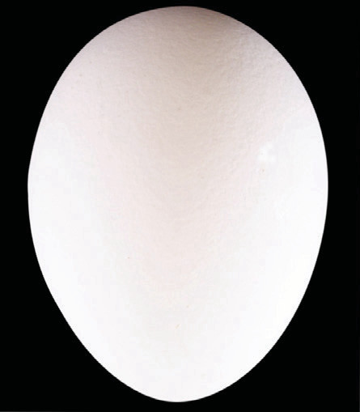
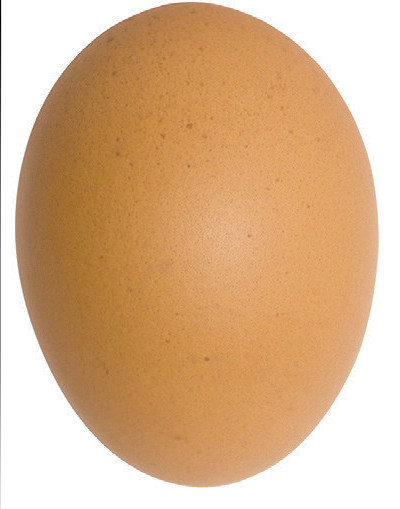
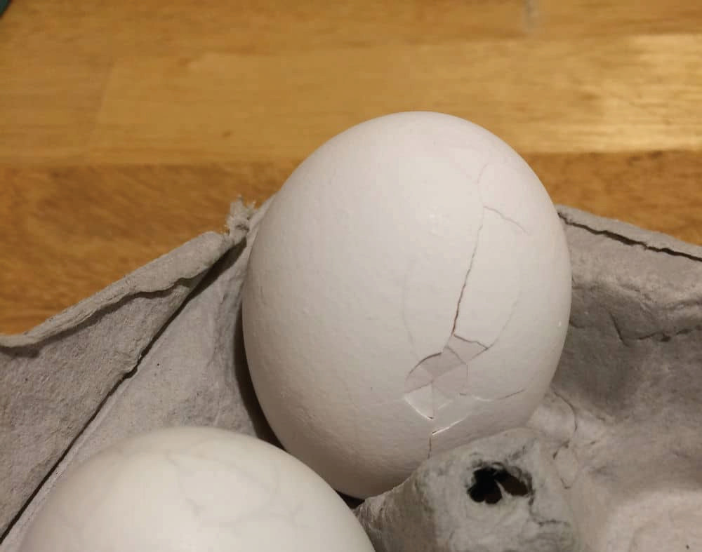
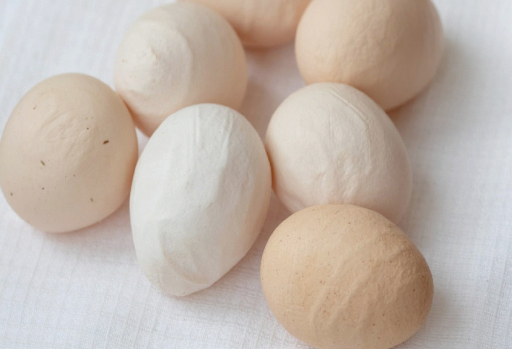
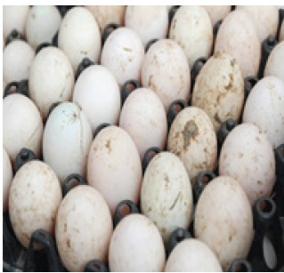

Handling and value addition of table eggs
Handling and adding value to table eggs involves several important aspects. First, eggs are collected from egg-laying hens. Egg producers should follow local regulations and practices. Next, eggs are inspected for quality and defects. Grading is done based on quality, size, and weight. Eggs are then carefully packaged in cartons or trays, and labelled with relevant information. Proper storage is crucial to maintain the freshness and quality of the eggs, depending on the desired storage duration. It is important to handle eggs safely to prevent foodborne illnesses.
Collection of eggs:
In the poultry farm/unit, it is advised to collect eggs from the laying house at least twice a day (early morning and late afternoon). This practice helps to prevent dirtying and breakage of eggs. It also reduces the chances of contamination and egg eating.Inspection of eggs:
Inspection of eggs is done to identify and remove dirty eggs, wrinkled shells and cracked the ones from the normal ones (refer to Figures 11.5 (a) to (d)).



